2125C70 gearbox/brake lever mount - r r
- Path
- Procedures > 21 GEARBOX > 2125 MANUAL GEARBOX EXTERNAL CONTROLS > 2125C manual gearbox external control (cables) > 2125C70 gearbox/brake lever mount - r r
- Kind
- repair procedure (removal / refitting; the operation number is the code)
- Applies to
- engines: 1.6 TS , 1.8 TS, 2.0 JTS, 2.5 V6, 3.2 V6, 1.9 JTD 8v , 1.9 JTD 16v, 2.0 JTS, 2.4 JTD 10v, 2.4 JTD 20v; all production periods
- Interactive page
- https://sloeber94.github.io/elrnDB-a156/en/#/3237935
Applies to: engines: 1.6 TS , 1.8 TS; all production periods
 Removing
Removing
 Refitting
RefittingPosition the vehicle on the ramp.
5530B52 Battery DRIP TRAY/SUPPORT - R.R. .
1. Disconnect the gear selector/engagement cables.
2. Undo the bolts (2a) and release the bracket (2b) complete with gear selector/engagement cables.
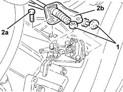
Applies to: engines: 2.0 JTS, 2.0 JTS; all production periods
Position the vehicle on the ramp.
5530B52 Battery DRIP TRAY/SUPPORT - R.R. .
1. Disconnect the gear selector/engagement cables.
2. Undo the nuts (2a) and release the bracket (2b) complete with gear selector/engagement cables.
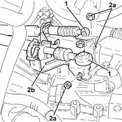
Applies to: engines: 1.6 TS , 1.8 TS, 2.0 JTS, 2.0 JTS; all production periods
1. Remove the gear lever boot.
2. Remove the handbrake boot.
3. Lift up the handbrake lever (3a) and loosen the nut (3b) tensioning the handbrake cables.
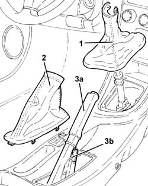
Applies to: engines: 1.6 TS , 1.8 TS; all production periods
1076B50 exhaust pipe attachment to engine - r + r .
1080B62 catalytic converter - r + r .
1. Undo exhaust pipe rigid pipe (1b) from flexible mounting (1a).
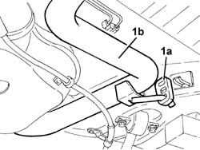
Applies to: engines: 2.0 JTS, 2.0 JTS; all production periods
Proceed with removal 1076B50 exhaust pipe attachment to engine - r + r .
Proceed with removal 1076B18 rigid section of exhaust pipe between catalytic converter and silencer - r + r .
1. Disconnect the intermediate exhaust silencer (1b) from the flexible support (1a).
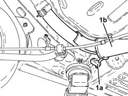
Applies to: engines: 1.6 TS , 1.8 TS, 2.0 JTS, 2.0 JTS; all production periods
1. Remove the retainer (1a) and disconnect the handbrake cables (1b).
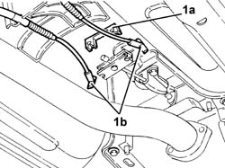
Applies to: engines: 1.6 TS , 1.8 TS, 2.0 JTS, 2.0 JTS; all production periods
1. Position a hydraulic jack under the gear lever and handbrake lever support.
2. Undo the bolts (2a) and the nuts (2b) fixing the gear lever and handbrake lever support to the bodyshell.
3. Lower the hydraulic jack as far as necessary and unscew nut (3a) of gear selection/engagement cable support plate (3b).
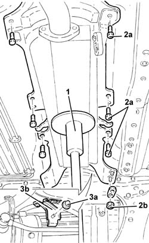
Applies to: engines: 1.6 TS , 1.8 TS, 2.0 JTS, 2.0 JTS; all production periods
1. Competely lower the hydraulic jack and remove the support for the gear lever and handbrake lever.
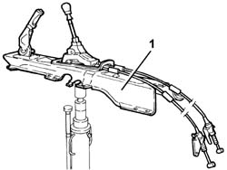
Applies to: engines: 1.6 TS , 1.8 TS; all production periods
1. Remove the safety plates (1a) and remove the gear selector/engagement cable mounting brackets (1b).
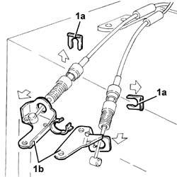
Applies to: engines: 2.0 JTS, 2.0 JTS; all production periods
1. Remove the safety plates (1a) and remove the gear selector/engagement cable mounting brackets (1b).
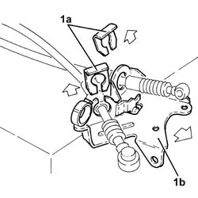
Applies to: engines: 1.6 TS , 1.8 TS, 2.0 JTS, 2.0 JTS; all production periods
1. Undo the nuts (1a) and remove the gear lever support (1b), complete with gear selector/engagement cables (1c).
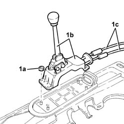
Applies to: engines: 1.6 TS , 1.8 TS, 2.0 JTS, 2.0 JTS; all production periods
1. Remove the safety plates (1a) and the circlip (1b), then disconnect and remove the gear selector/engagement cables (1c).
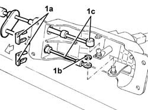
Applies to: engines: 1.6 TS , 1.8 TS, 2.0 JTS, 2.0 JTS; all production periods
Refitting
RemovingConnect the gear selector/engagement cables and fix them using the circlip and the safety plates.
Fit the gear lever support, complete with gear selector/engagment cables and fix them using the nuts.
Fit the gear selector/engagement mounting brackets and fix them using the nuts.
Fit the gear selector/engagement mounting brackets and fix them using the safety plates.
Fit the gear lever and handbrake lever support assembly using the hydraulic jack.
Refit the gear selector/engagement cables mount plate and secure it the appropriate nut.
Tighten the bolts and nuts securing the gearlever and handbrake lever mount to the body.
Remove the hydraulic jack from underneath the gear lever and handbrake lever support.
Connect the handbrake cables and secure them using the retainer.
Applies to: engines: 2.0 JTS, 2.0 JTS; all production periods
Connect the intermediate exhaust silencer to the flexible mount.
Proceed with refitting 1076B30 front exhaust silencer - r + r .
Proceed with refitting 1076B18 rigid section of exhaust pipe between catalytic converter and silencer - r + r .
Applies to: engines: 1.6 TS , 1.8 TS; all production periods
Connect the exhaust pipe rigid pipe to the flexible mounting.
Applies to: engines: 1.6 TS , 1.8 TS, 2.0 JTS, 2.0 JTS; all production periods
3380A04 handbrake - check travel .
Refit the handbrake boot.
Fit the gear lever boot.
Refit the bracket complete with gear engagement/selection cables and secure it.
5530B52 Battery DRIP TRAY/SUPPORT - R.R. .
Remove the car from the ramps.
Applies to: engines: 2.5 V6, 3.2 V6, 1.9 JTD 8v , 2.4 JTD 10v; all production periods
Removing
RefittingPosition the vehicle on the ramp.
5530B52 Battery DRIP TRAY/SUPPORT - R.R.
1. Disconnect the gear selector/engagement cables.
2. Undo bolts (2a) and remove mounting bracket (2b) complete with gear selector/engagement cables.
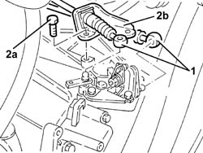
Applies to: engines: 2.5 V6, 3.2 V6, 1.9 JTD 8v , 2.4 JTD 10v; all production periods
1. Remove the gear lever boot.
2. Remove the handbrake boot.
3. Lift up the handbrake lever (3a) and loosen the nut (3b) tensioning the handbrake cables.
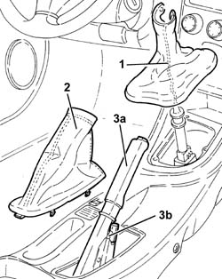
Applies to: engines: 2.5 V6, 3.2 V6, 1.9 JTD 8v , 2.4 JTD 10v; all production periods
1076B50 exhaust pipe attachment to engine - r + r
1080B62 catalytic converter - r + r
1. Disconnect the rigid exhaust pipe section (1b) from flexible mounting (1a).
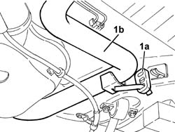
Applies to: engines: 2.5 V6, 3.2 V6, 1.9 JTD 8v , 2.4 JTD 10v; all production periods
1. Remove the retainer (1a) and disconnect the handbrake cables (1b).
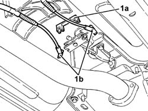
Applies to: engines: 2.5 V6, 3.2 V6, 1.9 JTD 8v , 2.4 JTD 10v; all production periods
1. Position a hydraulic jack under the gear lever and handbrake lever support.
2. Undo the bolts (2a) and the nuts (2b) fixing the gear lever and handbrake lever support to the bodyshell.
3. Lower the hydraulic jack as far as necessary and unscew nut (3a) of gear selection/engagement cable support plate (3b).
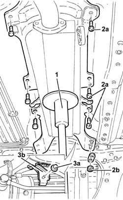
Applies to: engines: 2.5 V6, 3.2 V6, 1.9 JTD 8v , 2.4 JTD 10v; all production periods
1. Competely lower the hydraulic jack and remove the support for the gear lever and handbrake lever.
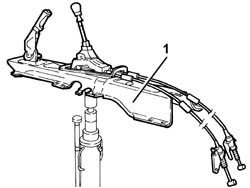
Applies to: engines: 2.5 V6, 3.2 V6, 1.9 JTD 8v , 2.4 JTD 10v; all production periods
1. Remove the safety plates (1a) and remove the gear selector/engagement cable mounting brackets (1b).
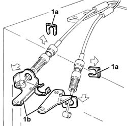
Applies to: engines: 2.5 V6, 3.2 V6, 1.9 JTD 8v , 2.4 JTD 10v; all production periods
1. Undo the nuts (1a) and remove the gear lever support (1b), complete with gear selector/engagement cables (1c).
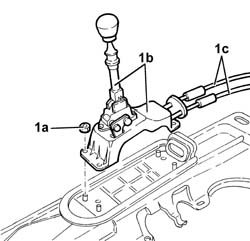
Applies to: engines: 2.5 V6, 3.2 V6, 1.9 JTD 8v , 2.4 JTD 10v; all production periods
1. Remove the safety plates (1a) and the circlip (1b), then disconnect and remove the gear selector/engagement cables (1c).
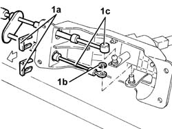
Applies to: engines: 2.5 V6, 3.2 V6, 1.9 JTD 8v , 2.4 JTD 10v; all production periods
1. Remove the gear lever grip (1a) with the tool (1b) positioned as illustrated in the diagram and undo the bolt until it is completely removed.
 | Name | Country |
|---|---|---|
1b | Extractor | 1.870.668.000 |
2. Remove the spring.
3. Fit the reverse gear inhibitor.
4. Remove the circlip (4a) and remove the lever (4b).
5. Undo the bolts (5a) and separate the gear control rod (5b) from the supports (5c).
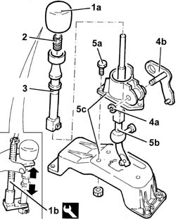
Applies to: engines: 2.5 V6, 3.2 V6, 1.9 JTD 8v , 2.4 JTD 10v; all production periods
Refitting
Removing1. Fit the gear control rod (1a) on the supports (1b) and secure using the bolts (1c).
2. Fit the lever (2a) and fasten it using the circlip (2b).
3. Fit the reverse gear inhibitor.
4. Fit the spring.
5. Place the gear lever knob (5b) back in its housing with the tool (5b) positioned as illustrated in the diagram and adjust the bolt until the fitting it completed.
| Name | Country |
|---|---|---|
5b | Extractor | 1.870.668.000 |
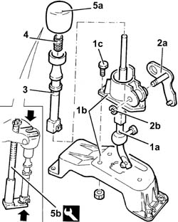
Applies to: engines: 2.5 V6, 3.2 V6, 1.9 JTD 8v , 2.4 JTD 10v; all production periods
Connect the gear selector/engagement cables and fix them using the circlip and the safety plates.
Fit the gear lever support, complete with gear selector/engagement cables and fix them using the nuts.
Fit the gear selector/engagement mounting brackets and fix them using the safety plates.
Place the gear lever and handbrake lever support back in its housing using the hydraulic jack.
Refit the gear selector/engagement cables mount plate and secure it the appropriate nut.
Tighten the bolts and nuts securing the gearlever and handbrake lever mount to the body.
Remove the hydraulic jack from underneath the gear lever and handbrake lever support.
Connect the handbrake cables and secure them using the retainer.
Connect the exhaust pipe rigid pipe to the flexible mounting.
1080B62 catalytic converter - r + r
1076B50 exhaust pipe attachment to engine - r + r
3380A04 handbrake - check travel
Refit the handbrake boot.
Fit the gear lever boot.
Refit the bracket complete with gear engagement/selection cables and secure with bolts
Position the gear lever in neutral and move it completely towards the right.
1. Loosen the adjustment nut for the gear selector/engagement unit.
2. Fit tool A under the gear engagement cable attachment ball.
| Name | Country |
|---|---|---|
2 | Spacer | 1.860.974.000 |
3. Connect the gear selector/engagement cables.
Tighten the adjustment nut.
Remove the spacer.
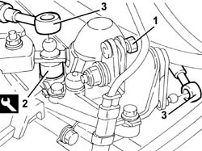
Applies to: engines: 2.5 V6, 3.2 V6, 1.9 JTD 8v , 2.4 JTD 10v; all production periods
Remove the car from the ramps.
Applies to: engines: 1.9 JTD 16v; all production periods
Removing
RefittingPosition the vehicle on the ramp.
Proceed with removal 1016A10 sound-proofing cover - r + r .
Proceed with removal 5530B10 battery - r+r .
Proceed with removal 5530B52 Battery DRIP TRAY/SUPPORT - R.R. .
1. Release and remove the manual gearbox lever boot.
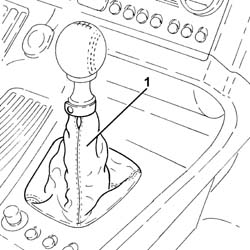
Applies to: engines: 1.9 JTD 16v; all production periods
Remove the handbrake boot.
1. Lift up the handbrake lever (1a) and loosen the nut (1b) tensioning the handbrake cables.
2. Disconnect the electrical connection from the handbrake switch.
 | Name | Connector |
|---|---|---|
2 | Handbrake switch |
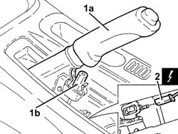
Applies to: engines: 1.9 JTD 16v; all production periods
1. Disconnect the gear selector and engagement cables.
2. Remove the safety plates (2a) and release the gear selector and engagement cables from the mounting bracket (2b).
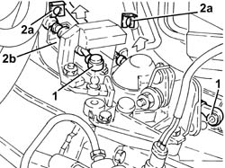
Applies to: engines: 1.9 JTD 16v; all production periods
Proceed with removal 7055B54 under-engine guard - r r .
1. Undo the nut fixing the gear selector and engagement cables mounting bracket to the power assisted steering box.
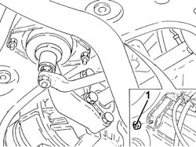
Applies to: engines: 1.9 JTD 16v; all production periods
Proceed with removal 1076B70 exhaust pipe between pre-catalytic converter and catalytic converter - r r .
1. Undo the bolts securing the catalytic converter to the rigid exhaust pipe section.
2. Remove the catalytic converter (2a) after having released it from the flexible mountings (2b).
Remove the gasket.
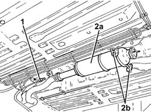
Applies to: engines: 1.9 JTD 16v; all production periods
1. Release the rigid pipe for the exhaust pipe between the catalytic converter and the silencer from the front flexible mounting.
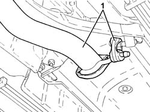
Applies to: engines: 1.9 JTD 16v; all production periods
1. Loosen the collar fastening the rigid exhaust pipe section between the catalytic converter and silencer, rear silencer side.
2. Release the rigid exaust pipe section between the catalytic converter and the silencer (2a) from the rear flexible mounting (2b) and remove it.
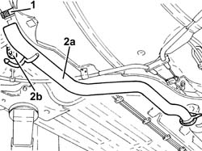
Applies to: engines: 1.9 JTD 16v; all production periods
1. Undo the nuts (1a) and the bolt (1b) and remove the exhaust pipe front heat shield (1c).
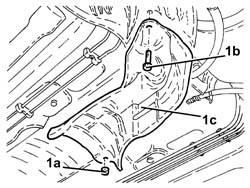
Applies to: engines: 1.9 JTD 16v; all production periods
1. Disconnect the handbarke cables from the bracket.
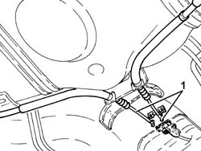
Applies to: engines: 1.9 JTD 16v; all production periods
1. Position a hydraulic jack under the gear lever and handbrake lever support.
2. Undo the bolts (2a) and nuts (2b) securing the electro-hydraulic gear lever support and handbrake to the bodyshell.
3. Recover the plates.
4. Lower the hydraulic jack as necessary and remove the exhaust pipe side heat shields.
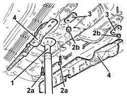
Applies to: engines: 1.9 JTD 16v; all production periods
1. Completely lower the hydraulic jack and remove the gear lever and handbrake support.
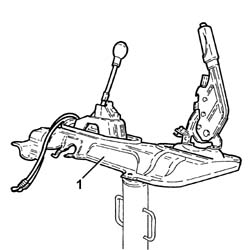
Applies to: engines: 1.9 JTD 16v; all production periods
1. At the bench, undo the bolts (1a) and remove the handbrake lever assembly (1b).
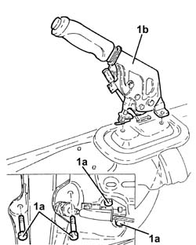
Applies to: engines: 1.9 JTD 16v; all production periods
1. Undo the nuts fixing the manual gearbox lever.
2. Disconnect the gear selector and engagement cables for the manual gearbox.
3. Remove the clips fixing the gear selector and engagement cables to the manual gearbox gear lever.
4. Remove the gear selector and engagement cables.
5. Remove the manual gearbox gear lever.
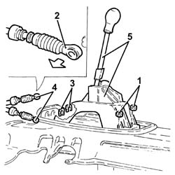
Applies to: engines: 1.9 JTD 16v; all production periods
Refitting
RemovingPlace the manual gearbox control lever and the gear selector and engagment cables back in their housings.
Secure the gear selector and engagement cables to the manual gearbox control lever using the clips.
Connect the gear selector and engagement cables to the manual gearbox control lever.
Tighten the nuts fixing the manual gearbox control lever.
Place the handbrake lever assembly back on the support and secure it using the bolts.
Place the gearbox and handbrake levers support back in its housing using a hydraulic jack.
Place the exhaust pipe side heat shields back in their housings.
Tighten the bolts and the nuts complete with plates fixing the gear lever and handbrake lever support to the bodyshell.
Remove the hydraulic jack from underneath the gear lever and handbrake lever support.
Connect the handbrake cables to the bracket.
Place the exhaust pipe heat shield back in its housing and secure it using the nuts and the bolt.
Refit the rigid exhaust pipe section between the catalytic converter and the silencer and connect it to the rear exhaust silencer.
Connect the rigid exhaust pipe section between the catalytic converter and the silencer to the flexible mountings.
Tighten the collar fastening the rigid section of the exhaust pipe between the catalytic converter and the silencer, rear silencer side.
1. Place the catalytic converter (1a) complete with gaskets in its housing and fasten it to the flexible mountings (1b).
2. Tighten the bolts securing the catalytic converter to the exhaust pipe rigid section to the specified torque.
 | Fastening | Component | Ø | Value (daNm) |
|---|---|---|---|---|
2 | Bolt | CATALYTIC CONVERTER (ONE) | M8 | (Rigid pipe side) 2.3 ÷ 2.8 |
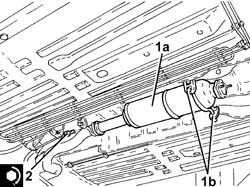
Applies to: engines: 1.9 JTD 16v; all production periods
Proceed with refitting 1076B70 exhaust pipe between pre-catalytic converter and catalytic converter - r r .
Tighten the nut securing the gear selector and engagement cables mounting bracket to the power assisted steering box.
Proceed with refitting 7055B54 under-engine guard - r r .
1. Position the gear lever (1a) in contact with the reverse inhibition wall (1b).
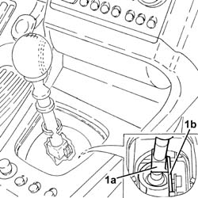
Applies to: engines: 1.9 JTD 16v; all production periods
1. Loosen the adjustment nut on the gear selector and engagement unit.
2. Position the spacer tool under the gear engagement lever.
| Name | Country |
|---|---|---|
2 | Spacer | 1.870.974.000 |
3. Connect the gear selector cable.
Tighten the adjustment nut on the gear selector and engagement assembly.
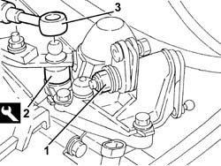
Applies to: engines: 1.9 JTD 16v; all production periods
Position the gear lever in Reverse position and remove the tool located under the gear engagement lever.
| Name | Country |
|---|---|---|
- | Spacer | 1.870.974.000 |
Place the gear lever in 'neutral'.
Connect the gear engagement cable.
Fasten the gear selector and engagement cables to the mounting bracket using the safety plates.
Connect the electrical connection to the handbrake switch.
Proceed with refitting 3380A04 handbrake - check travel .
Place the manual gear lever boot back in its housing.
Proceed with refitting 5530B52 Battery DRIP TRAY/SUPPORT - R.R. .
Proceed with refitting 5530B10 battery - r+r .
Proceed with refitting 1016A10 sound-proofing cover - r + r .
Remove the car from the ramps.
Applies to: engines: 2.4 JTD 20v; all production periods
Removing
RefittingPosition the vehicle on the ramp
Proceed with removal 1016A10 sound-proofing cover - r + r .
Proceed with removal 5530B10 battery - r+r .
Proceed with removal 5530B52 Battery DRIP TRAY/SUPPORT - R.R. .
1. Disconnect the gear selector cable.
2. Disconnect the gear engagement cable.
3. Remove the retaining clips (3a) and release the gear selector and engagement cables (3b) from the mounting bracket.
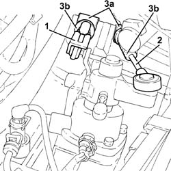
Applies to: engines: 2.4 JTD 20v; all production periods
1. Remove the gear lever boot.
2. Remove the handbrake boot.
3. Lift up the handbrake lever (3a) and loosen the nut (3b) tensioning the handbrake cables.
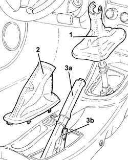
Applies to: engines: 2.4 JTD 20v; all production periods
Proceed with removal 7055B54 under-engine guard - r r .
Proceed with removal 1076B70 exhaust pipe between pre-catalytic converter and catalytic converter - r r .
Proceed with removal 1080B62 catalytic converter - r + r .
1. Remove the retainer (1a) and disconnect the handbrake cables (1b).
Applies to: engines: 2.4 JTD 20v; all production periods
1. Position a hydraulic jack under the gear lever and handbrake lever support.
2. Undo the bolts (2a) and the nuts (2b) fixing the gear lever and handbrake lever support to the bodyshell.
3. Lower the hydraulic jack as far as necessary and unscew nut (3a) of gear selection and engagement cable support plate (3b).
Applies to: engines: 2.4 JTD 20v; all production periods
1. Competely lower the hydraulic jack and remove the support for the gear lever and handbrake lever.
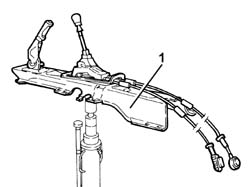
Applies to: engines: 2.4 JTD 20v; all production periods
1. At the bench, undo the nuts (1a) and remove the gear lever support (1b), complete with gear selector/engagement cables (1c).
Applies to: engines: 2.4 JTD 20v; all production periods
1. Remove the retaining clips (1a) and the circlip (1b), then disconnect the gear selection and engagement cables (1c).
Applies to: engines: 2.4 JTD 20v; all production periods
1. Remove the gear lever grip (1a) with the tool (1b) positioned as illustrated in the diagram and undo the bolt until it is completely removed.
| Name | Country |
|---|---|---|
1b | Extractor | 1.870.668.000 |
2. Remove the spring.
3. Fit the reverse gear inhibitor.
4. Remove the circlip (4a) and remove the lever (4b).
5. Undo the bolts (5a) and separate the gear control rod (5b) from the supports (5c).
Applies to: engines: 2.4 JTD 20v; all production periods
Refitting
Removing1. Fit the gear control rod (1a) on the supports (1b) and secure using the bolts (1c).
2. Place the lever (2a) in its housing and secure it using the circlip (2b).
3. Place the reverse gear inhibitor back in its housing.
4. Place the spring back in its housing.
5. Place the gear lever knob (5b) back in its housing with the tool (5b) positioned as illustrated in the diagram and adjust the bolt until the fitting it completed.
| Name | Country |
|---|---|---|
5b | Extractor | 1.870.668.000 |
Applies to: engines: 2.4 JTD 20v; all production periods
Connect the gear selector and engagement cables and secure them using the circlip and the retaining clips.
Place the gear lever mounting complete with gear selector and engagement cables back in its housing and secure it using the nuts.
Place the gear lever and handbrake lever support back in its housing using the hydraulic jack.
Place the gear selector and engagement cables mounting plate back in its housing and secure it using the nut.
Tighten the bolts and nuts securing the gearlever and handbrake lever mount to the body.
Remove the hydraulic jack from underneath the gear lever and handbrake lever support.
Connect the handbrake cables and secure them using the safety clip.
Place the boot in its seat
Proceed with refitting 1080B62 catalytic converter - r + r .
Proceed with refitting 1076B70 exhaust pipe between pre-catalytic converter and catalytic converter - r r .
Proceed with refitting 7055B54 under-engine guard - r r .
3380A04 handbrake - check travel .
IF THE GEAR SELECTOR CABLE IS BEING REUSED AND DOES NOT NEED ADJUSTING, PROCEED AS FOLLOWS.
Connect the end of the gear selector cable.
Fasten the gear selector cable to the mounting bracket using the retaining clip.
Connect the end of the gear engagement cable.
Fasten the gear engagement cable to the mounting bracket using the retaining clip.
Place the gear lever boot back in its housing.
Proceed with refitting 5530B52 Battery DRIP TRAY/SUPPORT - R.R. .
Proceed with refitting 5530B10 battery - r+r .
Proceed with refitting 1016A10 sound-proofing cover - r + r .
Remove the car from the ramps.
IF THE GEAR SELECTOR CABLE IS BEING REPLACED OR THE CURRENT ONE IS BEING ADJUSTED, PROCEED AS FOLLOWS.
1. Working in the engine compartment, lift up the selector unit until opening (1a) is aligned with opening (1b), then insert a 5 mm diameter pin (1c) and lock the assembly in this position.
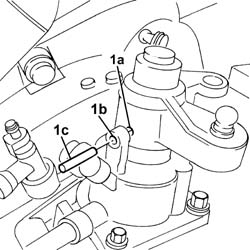
Applies to: engines: 2.4 JTD 20v; all production periods
Place the gear lever in neutral in the end of travel position against the left side of the housing (driver's side), then lock it in this position.
Working in the engine compartment, connect the end of the gear selector cable and lock the adjustment device.
Fasten the gear selector cable to the mounting bracket using the retaining clip.
Connect the end of the gear engagement cable.
Fasten the gear engagement cable to the mounting bracket using the retaining clip.
Remove the pin and the tool used for locking the gear lever and check the selection and engagement of all the gears.
Place the gear lever boot back in its housing.
Proceed with refitting 5530B52 Battery DRIP TRAY/SUPPORT - R.R.
Proceed with refitting 5530B10 battery - r+r
Proceed with refitting 1016A10 sound-proofing cover - r + r
Remove the car from the ramps.
Topics linked from this page (11)
- 1016A10 sound-proofing cover - r + r
- 1076B18 rigid section of exhaust pipe between catalytic converter and silencer - r + r
- 1076B30 front exhaust silencer - r + r
- 1076B50 exhaust pipe attachment to engine - r + r
- 1076B70 exhaust pipe between pre-catalytic converter and catalytic converter - r r
- 1080B62 catalytic converter - r + r
- 3380A04 handbrake - check travel
- 5530B10 battery - r+r
- 5530B52 Battery DRIP TRAY/SUPPORT - R.R.
- 7055B54 under-engine guard - r r
- I40 Handbrake switch